Charts & Graphs
Graphs are great for condensing data points into a Visualization.
With Dune, you can create the following types of graphs:
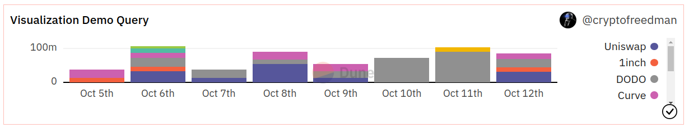
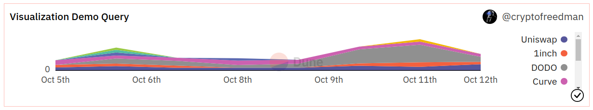
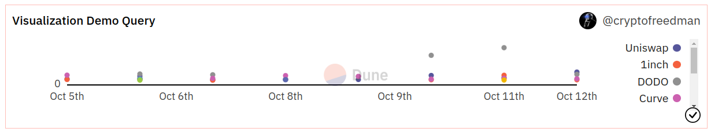
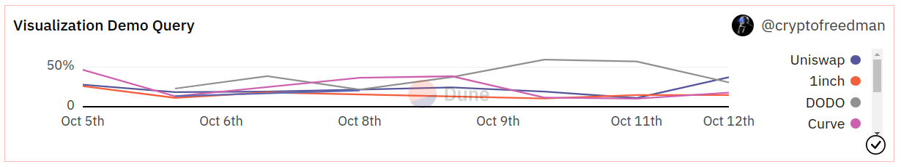
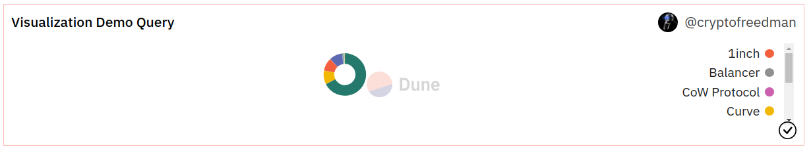
You can mix all of these graph types together in one Visualization, as long as your base graph isn't a Pie chart:
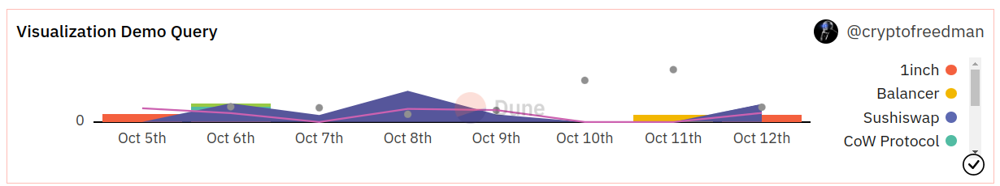
All graph Visualizations share a common set of editing options, see the tabs below for how to configure each.
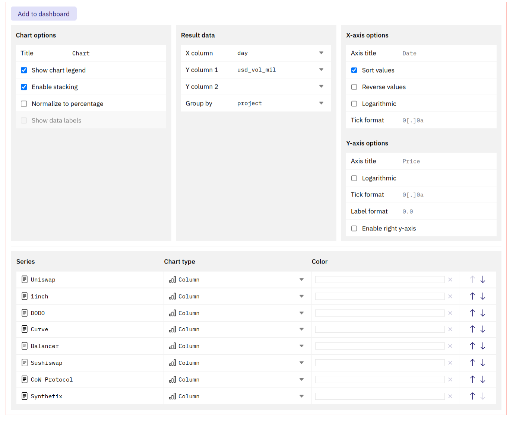
Visualization Configuration Options¶
This section allows you to define how to display your data.
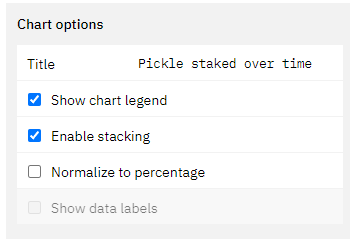
Title
- The title will appear in all instances of this graph prominently at the top.
- The graph will always keep the name of the Query, even if you edit this.
Show chart legend
- Ticking this box will enable or disable the legend for the chart.
Enable stacking
- If applicable, ticking this box will stack the chart values on top of each other based on the x-axis values.
- If this is not turned on, the values will be plotted individually on the y-axis.
- The calculation underpinning this will always group the value corresponding to one value on the x-axis. Make sure your data is clean in able for this to work (avoid gaps in your data).
Normalize to percentage data
- This will normalize the chart to display percentage values of the chosen data table.
- The calculation underpinning this will always group the value corresponding to one value on the x-axis. Make sure your data is clean in able for this to work (avoid gaps in your data).
Show data labels
- Ticking this box leads to the display of the individual datapoints inside of the graph.
- This only makes sense in cases where you have few datapoints that are spread out far enough from each other to not overlap.
Here you can pick the data points that are to be displayed.
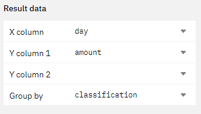
You can choose one x-axis and multiple y-axis.
Alternatively, you can also choose one data series on the y-axis and choose to group it by a different column of your table (as shown in the example above).
Using these options you can influence how your x-axis data gets displayed.
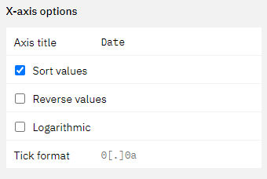
Axis title
- This field allows you to specify a title for your x-axis.
Sort Values
- by ticking this box you can specify if you want the values in your chart to be ordered.
- If your x-axis is a time series, this will automatically happen.
Reverse value
- Ticking this box will reverse the order of the values on the x-axis.
Logarithmic
- Ticking this box will make your x-axis values display __ logarithmically.
With these options you can influence how your x-axis data gets displayed.
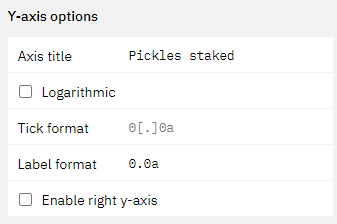
Axis title
- This field allows you to specify a title for your y-axis.
Logarithmic
- Ticking this box will make your x-axis values display __ logarithmically.
Enable right y-axis
- Ticking this box will enable an additional y-axis that you can plot values on.
- You can choose in the chart series section what you want to be displayed on the left and right axis.
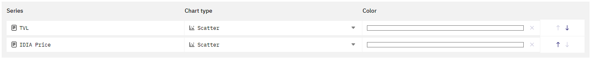
In this section of the Visualization editor you can finalize your graph.
- You can rename the "series" by simply clicking into the field.
- You can change the chart type by clicking into the dropdown.
- You can change the colors by clicking into the color box.
- Finally you can also change the order of the series.
Picking Colors
You can pick colors with your browser native color selector.
This might look slightly different for you depending on which browser you use.
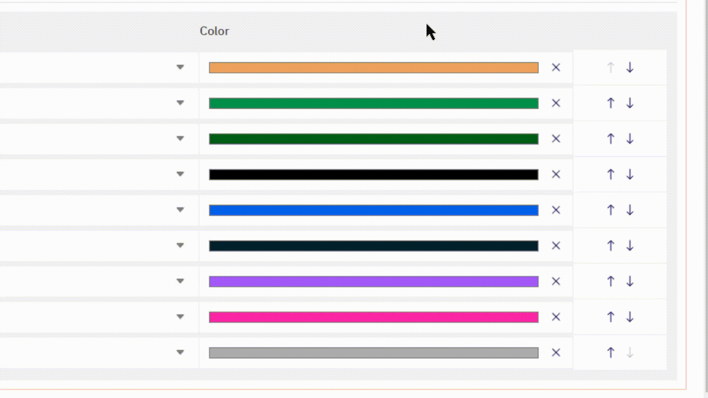
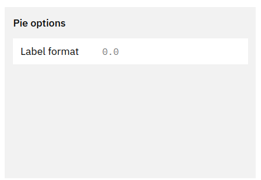
Label format
- This field allows you to define the tick format of the data labels in your pie chart.
X/Y-axis Tick and Label formats¶
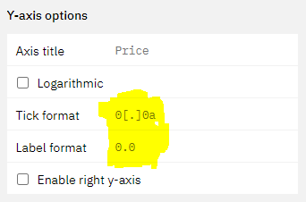
Tick formats change how numeric values and axis labels in your graphs are displayed.
Here's how to format them:
| Starting Value | Tick/Label format | Output | Description |
|---|---|---|---|
| 1256784.3745 | [blank] |
1256784.3745000 | Displays the number 7 decimal precision. |
| 1256784.3745 | 0 |
1256784 | Displays only the integer. |
| 1256784.3745 | 0,0 |
1,256,784 | Only displays the integer with comma separation. |
| 1256784.3745 | 0,0.00 |
1,256,784.38 | Displays the number with [x] decimal precision, where [x] is the number of 0 you add after the decimal point. |
| 1256784.3745 | 0.0a |
1.2M | Displays the number with [x] precision and a letter based on the number's 1e[y] power (eg "m" for million, "b" for billion) |
| 1256784.3745 | $0.0a |
$1.2M | Adds a "$" to the number. Works with all formats above though use of the a suffix is recommended. Currently the only "$" is the only supported currency symbol. |